Arsitektur Hibrida: Yang Terbaik dari Dua Dunia dengan Supabase dan Spring Boot
Diterbitkan 14 January 2026
Alih-alih memilih antara kesederhanaan Supabase dan kekuatan Spring Boot, mengapa tidak menggabungkan keduanya? Temukan arsitektur hibrida yang memanfaatkan yang terbaik dari setiap teknologi.
- tok
-
[]
- Dilema Palsu Arsitektur Modern
- Visi Arsitektur
- Prinsip Desain
- Orkestrasi Aliran
- Matriks Keputusan
- Contoh Arsitektur per Tipe Proyek
- Strategi migrasi bertahap
- Biaya dan Pertimbangan Operasional
- Kesimpulan: Keseimbangan Sempurna
- Untuk Pergi Lebih Jauh
- Perspektif perkembangan
- Bukti Arkitektonik
- Sintesis : Sebuah Paradigma Arsitektur Modern
- Kesimpulan Akhir
Dilema Palsu Arsitektur Modern
Saat membangun aplikasi modern dengan frontend statis, kita sering kali menghadapi pilihan biner:
-
Menaruh semua harapan pada solusi Backend-as-a-Service(Supabase, Firebase) - sederhana tetapi terbatas
-
Membangun backend lengkap(Spring Boot, Node.js) - kuat namun kompleks
Pilihan ini adalah dilema palsu. Arsitektur hibrid menawarkan jalan ketiga: menggunakan setiap teknologi tempat ia mengungguli
Visi Arsitektur
Arsitektur Tradisional: Monolitik
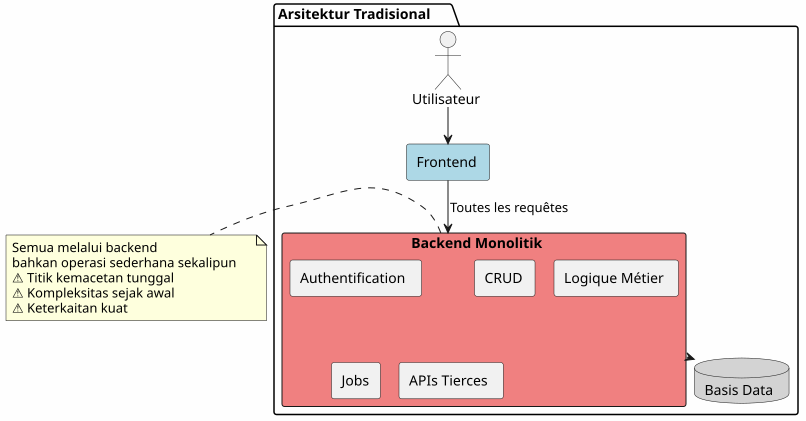
Pendekatan ini, bahkan operasi paling sederhana (membaca artikel, membuat komentar) harus melalui backend Anda. Anda membayar biaya kompleksitas sejak hari pertama.
Arsitektur BaaS: Semua Delegasi
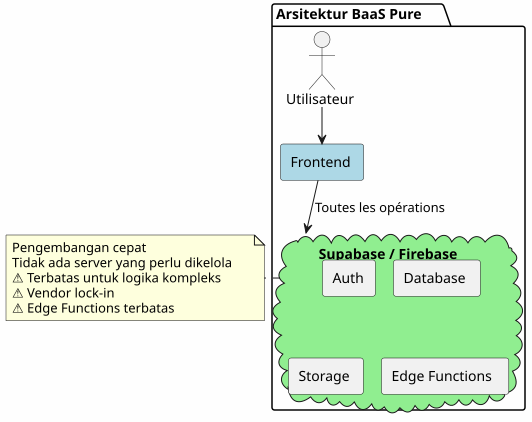
Sebaliknya, mendelegasikan semuanya ke BaaS menarik di awal tetapi menunjukkan batasnya dengan cepat saat logika bisnis menjadi kompleks.
Arsitektur Hibrid: Pemisahan Tanggung Jawab
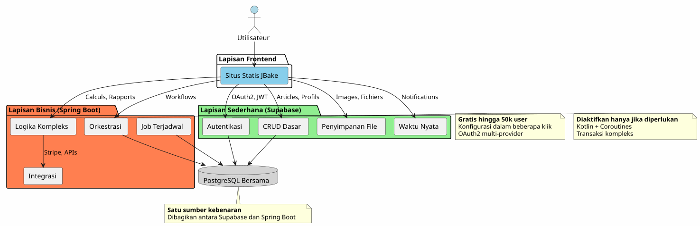
Arsitektur hybrida memisahkan dengan jelas tanggung jawab berdasarkan kompleksitas dan sifat operasi.
Prinsip Desain
Prinsip 1 : Mulai Sederhana, Berkembang Cerdas
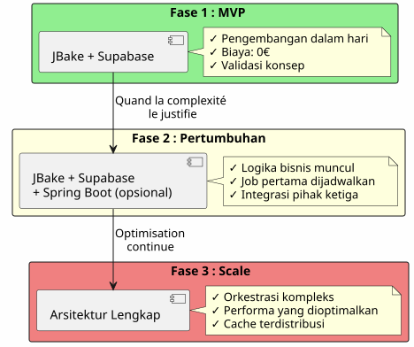
Jangan membangun Spring Boot jika Anda tidak membutuhkannya.Mulai dengan Supabase, tambahkan Spring Boot bila kompleksitas membenarkannya.
Prinsip 2 : Pemisahan berdasarkan Jenis Operasi

Prinsip 3 : Satu Sumber Kebenaran
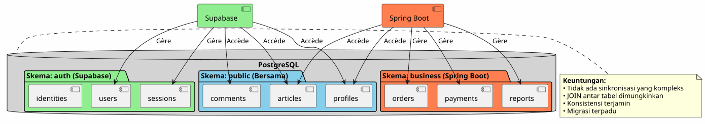
Dengan berbagi instance PostgreSQL yang sama, Supabase dan Spring Boot bekerja pada data yang sama tanpa sinkronisasi yang kompleks.
Orkestrasi Aliran
Alur 1 : Otentikasi Terpusat
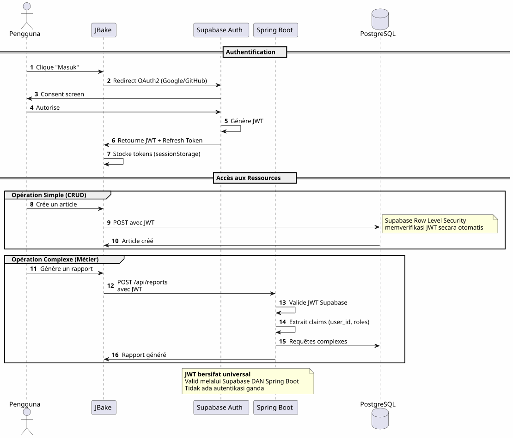
Poin penting: Sebuah proses otentikasi tunggal, satu JWT, dapat digunakan di mana saja.
Aliran 2 : Orkeshtrasi sebuah Proses Bisnis Kompleks
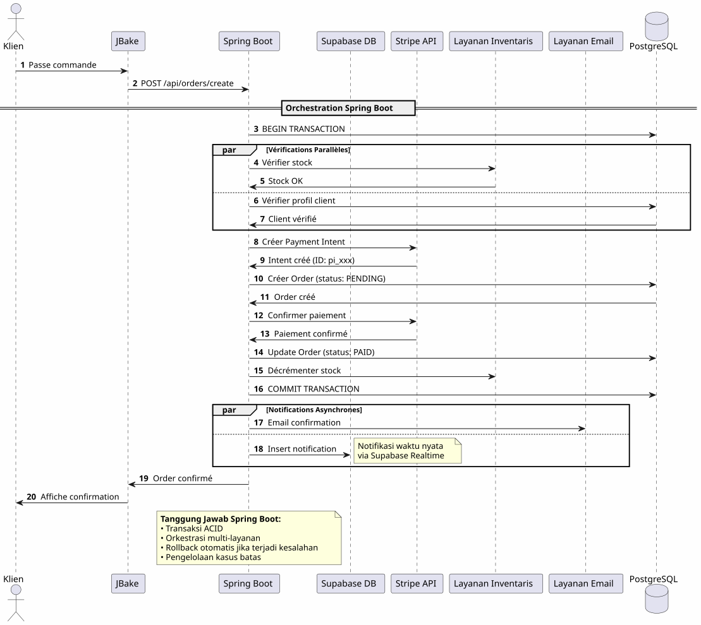
Apa yang diberikan Spring BootOrchestrasi yang andal dari proses kompleks yang melibatkan beberapa sistem dengan jaminan transaksional.
Aliran 3: Pekerjaan terjadwal dan sinkronisasi
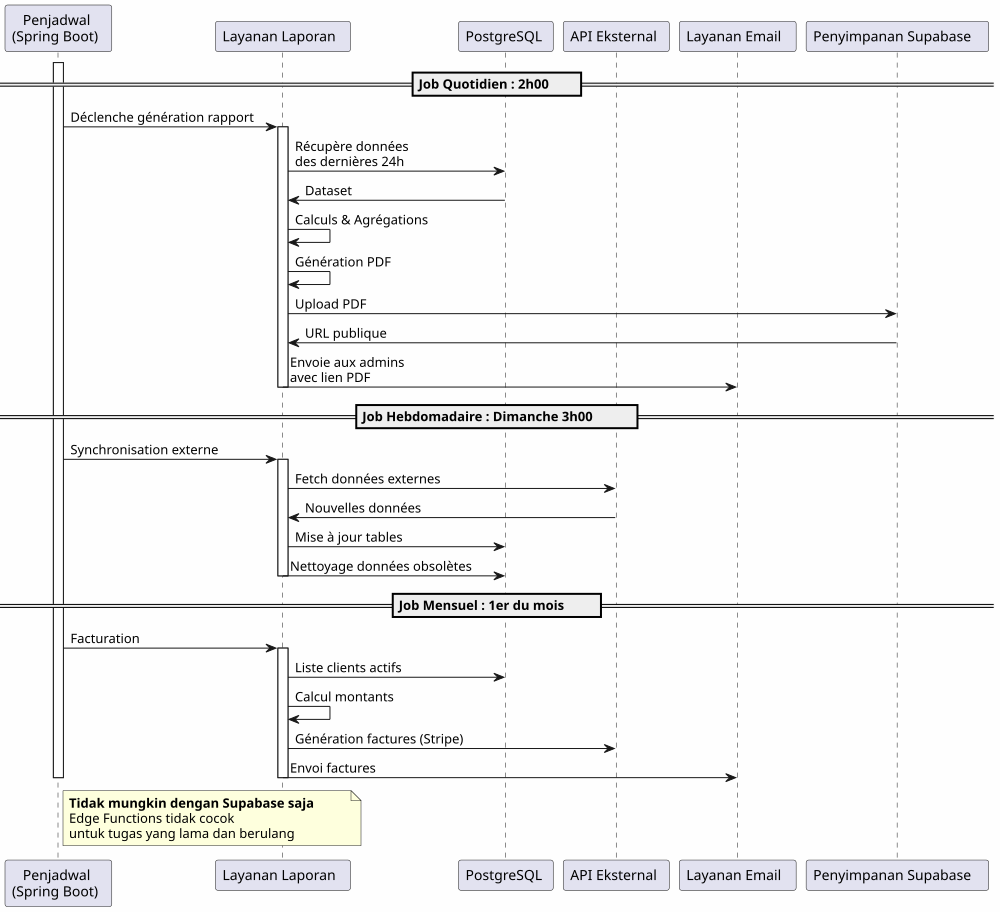
Apa yang Spring Boot bawa : Pekerjaan terjadwal yang andal dengan pengelolaan status, retry otomatis, dan eksekusi terjamin.
Matriks Keputusan
Kapan menggunakan Supabase?

Kapan Menggunakan Spring Boot ?

Contoh Arsitektur per Tipe Proyek
Blog / Portofolio
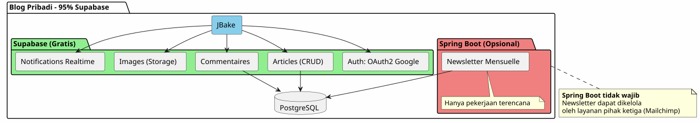
putusan: 100% Supabase sudah cukup.
Aplikasi SaaS
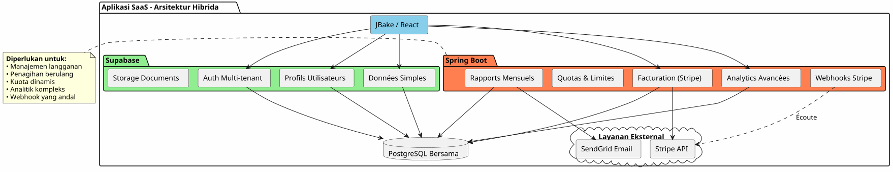
putusanArsitektur hibrid diperlukan. Supabase untuk bagian inti, Spring Boot untuk bagian kritis (pembayaran, penagihan).
perdagangan elektronik
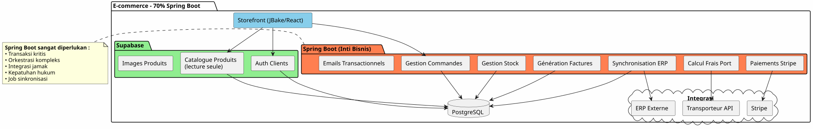
PutusanSpring Boot diperlukan. Supabase hanya untuk auth dan katalog.
Strategi migrasi bertahap
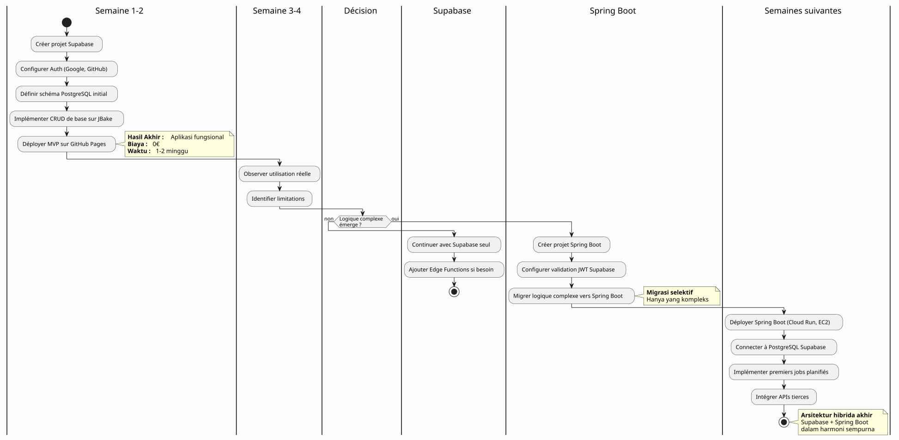
Biaya dan Pertimbangan Operasional
Struktur Biaya
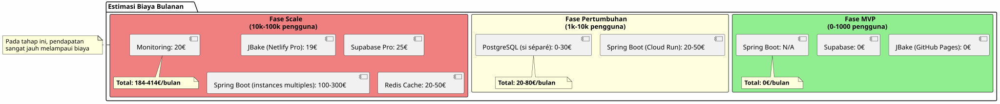
Tanggung Jawab Operasional
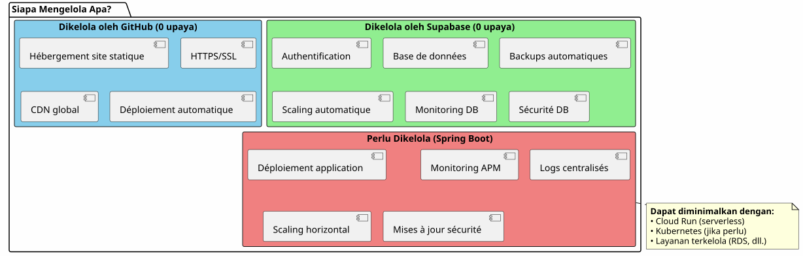
Kesimpulan: Keseimbangan Sempurna
Arsitektur hibrid Supabase + Spring Boot bukanlah sebuah kompromi, ini adalahsinergi.
Prinsip-prinsip yang harus diingat

Kapan Memilih Arsitektur Ini?
✅ Arsitektur ini ideal jika :
-
Anda ingin memulai dengan cepat (MVP dalam hari, bukan dalam bulan)
-
Kamu mengantisipasi pertumbuhan kompleksitas bisnis
-
Anda ingin meminimalkan biaya awal
-
Anda menyukai PostgreSQL dan ingin memiliki satu sumber kebenaran yang unik
-
Anda menyukai Kotlin dan coroutine untuk kode bisnis
-
Anda ingin menghindari vendor lock-in total
❌ Arsitektur ini TIDAK cocok jika :
-
Proyek Anda sederhana dan akan tetap sederhana (blog pribadi → 100% Supabase cukup)
-
Anda sudah memiliki sebuah stack backend yang ter-establish yang Anda menguasai
-
Anda lebih suka sebuah monolit tradisional
-
Anda membutuhkan .NET, Python, atau bahasa pemrograman lain di sisi backend
Visions Keseluruhan Akhir
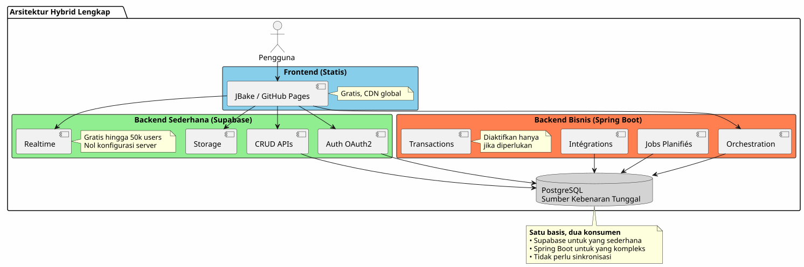
Terbaik dari kedua dunia
Arsitektur ini memberi Anda :
🚀 Kecepatan Supabase
-
Mulai dalam jam, bukan dalam minggu
-
Autentikasi OAuth2 dalam beberapa klik
-
APIs REST yang dihasilkan secara otomatis
-
Konfigurasi server nol
💪 Kekuatan Spring Boot
-
Kotlin dan Coroutines untuk kode asinkron yang elegan
-
Orkestrasi proses bisnis kompleks
-
Pekerjaan terjadwal yang andal
-
Transaksi ACID terjamin
-
Ekosistem Spring lengkap
💰 Ekonomi Progresif
-
0€ untuk mulai dan validasi
-
Biaya yang mengikuti pertumbuhan
-
Tanpa over-engineering yang dini
🎯 Fleksibilitas Arsitektur
-
Migrasi progresif tanpa rekonstruksi
-
Penambahan Spring Boot hanya jika diperlukan
-
Tidak ada vendor lock-in total
-
Arsitektur evolutif
Untuk Pergi Lebih Jauh
Sumber Daya Teknis
Dokumentasi Supabase :
Documentasi Spring Boot :
artikel tambahan :
-
Pengamanan API dengan JWT
-
Optimalisasi performa PostgreSQL
-
pola migrasi progresif
-
Penanganan kesalahan dalam arsitektur terdistribusi
Kasus Penggunaan Nyata
Arsitektur hibrid ini digunakan dengan sukses di :
-
SaaS B2B: Autentikasi Supabase, penagihan Spring Boot
-
pasar-pasar: Katalog Supabase, transaksi Spring Boot
-
Platform konten: Artikel Supabase, analitik Spring Boot
-
Alat internalCRUD Supabase, workflows Spring Boot
Daftar Periksa Awal
Phase 1 - Fondasi (Minggu 1)
-
Membuat akun Supabase - [ ] Mengonfigurasi proyek PostgreSQL - [ ] Mengaktifkan Auth (Google, GitHub) - [ ] Definisikan skema awal - [ ] Mengatur Row Level Security - [ ] Menguji API sejak JBake
Tahap 2 - MVP (Minggu 2-3)
-
mengimplementasikan halaman utama - [ ] Mengintegrasikan autentikasi OAuth2 - [ ] Membuat formulir CRUD - [ ] Mengkonfigurasi Storage untuk file - [ ] Men-deploy ke GitHub Pages - [ ] Uji dalam kondisi nyata
Tahap 3 - Perkembangan (Sesuai kebutuhan)
-
Identifikasi kebutuhan logika kompleks - [ ] Membuat proyek Spring Boot jika diperlukan - [ ] Konfigurasi validasi JWT Supabase - [ ] Menghubungkan ke PostgreSQL Supabase - [ ] Migrasikan fitur kompleks - [ ] Implementasikan pekerjaan terjadwal - [ ] Mendeploy Spring Boot (Cloud Run, etc.)
Anti-Patterns yang harus dihindari
❌ Jangan melakukan :
-
Menduplikasi data antara Supabase dan Spring Boot
-
Buat dua basis data PostgreSQL terpisah
-
Kodekan otentikasi sendiri
-
Menggunakan Spring Boot untuk CRUD sederhana
-
Melakukan arsitektur berlebihan sejak awal
-
Abaikan Keamanan Level Baris Supabase
✅ Lebih baik melakukan:
-
Membagikan satu basis data PostgreSQL
-
Biarkan Supabase mengelola otentikasi
-
Menggunakan Spring Boot hanya untuk kompleksitas
-
Memulai sederhana, berkembang secara bertahap
-
Memanfaatkan kekuatan setiap teknologi
-
Mengamankan dengan RLS pada tingkat basis data
Perspektif perkembangan
Penambahan Kemampuan Baru
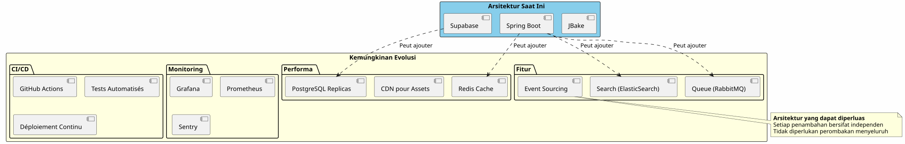
Penskalaan Horizontal
Saat aplikasi Anda tumbuh, arsitektur hybridnya diskalakan secara alami:
Supabase :
-
Menskala otomatis hingga jutaan operasi
-
Read replicas untuk kinerja pembacaan
-
Pemulihan poin waktu untuk keamanan
Spring Boot :
-
Beberapa instance di belakang load balancer
-
Desain tanpa keadaan memudahkan penskalaan horizontal
-
Kubernetes untuk orkestrasi jika diperlukan
PostgreSQL :
-
Partisi untuk tabel besar
-
Pooling koneksi (PgBouncer)
-
Sharding benar-benar diperlukan (jarang)
Bukti Arkitektonik
Startup SaaS (50k pengguna)
_ Kami memulai 100% Supabase. Pada 5 ribu pengguna, kami menambahkan Spring Boot hanya untuk penagihan Stripe dan laporan bulanan. Satu tahun kemudian, 80% dari operasi kami masih melewati Supabase. Spring Boot hanya mengelola bagian kritis. Pemisahan ini memungkinkan kami menskalakan tanpa perlu merancang ulang. _
Platform E-learning (10.000 pengguna)
_ Otentikasi OAuth2 Supabase telah menghemat tiga minggu pengembangan kami. API yang otomatis dihasilkan mengelola seluruh katalog kursus kami. Spring Boot hanya digunakan untuk sertifikat PDF dan email progres. Arsitektur sederhana, mudah dipelihara, dan mudah dikembangkan. _
Marketplace B2B (3k pengguna)
</think> (Empty output) Spring Boot mengelola transaksi antara pembeli dan penjual (kritik). Supabase mengelola seluruh hal lain: profil, pesan realtime, dokumen. Fakta bahwa mereka berbagi basis data PostgreSQL yang sama menghindarkan kita dari sinkronisasi yang kompleks. Pilihan arsitektur terbaik yang telah kita buat. __
Sintesis : Sebuah Paradigma Arsitektur Modern
Arsitektur hibrid Supabase + Spring Boot merepresentasikan sebuah paradigma baru :spesialisasi arsitektur.
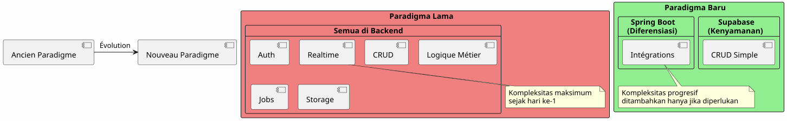
Prinsip fundamental:Jangan membangun apa yang sudah ada dalam bentuk layanan. Fokuslah pada apa yang membedakan aplikasi Anda.
prinsip 80/20
Dalam sebagian besar aplikasi:
-
80% dari operasiadalah CRUD standar → Supabase
-
20% dari operasimemerlukan logika bisnis → Spring Boot
Aturan alami ini membenarkan arsitektur hibrid.
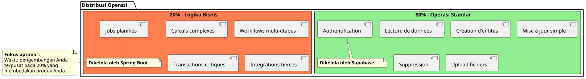
Kesimpulan Akhir
Arsitektur hibrid bukanlah sebuah kompromi teknis, ini adalahkeputusan strategis.
Dia memungkinkan Anda untuk :
-
✅ Memulai dengan cepat dengan MVP yang berfungsi
-
✅ Memvalidasi pasar Anda tanpa investasi yang besar
-
✅ Berkembang secara bertahap ketika kompleksitas mengharuskannya
-
✅ Mengendalikan biaya Anda pada setiap tahap
-
✅ Memanfaatkan yang terbaik dari setiap teknologi
-
✅ Menghindari over-engineering yang terlalu dini
-
✅ Menjaga fleksibilitas untuk masa depan
Dia mewakili :
-
🎯 Pragmatisme: Setiap teknologi di mana ia unggul
-
🚀kecepatan: Time-to-market minimal
-
💰ekonomi: Biaya yang selaras dengan nilai
-
🔮skalabilitas: Arsitektur yang tumbuh dengan anda
-
🛡️ketangguhan: Layanan yang terbukti dan andal
Langkah selanjutnya Anda
Jika arsitektur ini Anda rasakan, ini adalah tempat untuk memulai:
-
Buat akun Supabase(gratis)
-
Tentukan skema data minimal Anda
-
Konfigurasikan otentikasi OAuth2
-
Buat halaman JBake pertama Anda yang mengkonsumsi API
-
Deploy ke GitHub Pages
Anda akan memiliki MVP yang fungsional dibeberapa hari.
Spring Boot akan datang secara alami ketika Anda membutuhkannya. Belum sebelum.
Arsitektur hibrid adalah seni membangun tepat apa yang diperlukan, ketika diperlukan.
Semoga sukses dalam pengembangan! 🚀
Bagikan artikel ini jika Anda berpikir bahwa artikel ini dapat membantu pengembang lain untuk membuat pilihan arsitektur yang tepat.